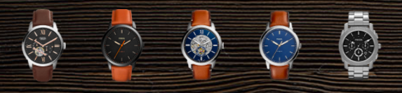

Fossil has always been inspired by American creativity and ingenuity. Since 1984, we've strived to bring new life into the industry by making quality, fashionable watched and accessories that were both fun and accessible.
Today, we continue to focus on what makes us, us: optimism, authenticity and, of course, out creative spirit.
At Fossil, we believe in the power of the moments that shape us. Who we are today is informed by every past experience and dream of the future. That’s why everything we create draws inspiration from both vintage American style and forward-thinking design. Crafting pieces to not only stand the test of time. But define it.
For this project I wanted to focus on a little bit of Javascript functionality so I made it to where you can click the watch you want to enlarge.
A minor challenge that I had with this landing page was getting the smaller watches selected to switch to the bigger watch area on the right side. I was able to solve this by creating a simple function targeting the bigger watch and setting the smaller watches to an onclick that swaps them out as they are selected.

I went into this project with the goal of displaying a few watches in a simple format and utilizing javascript. I came up with the idea of using a wood background and displayed the watches available on the bottom while highlighting the user selected watch on the far right side. With this I also wanted to incorporate social media for Fossil which I displayed on the side in unique colors as well. As a small touch I used CSS transition effects when hovering over the desired smaller watch.
